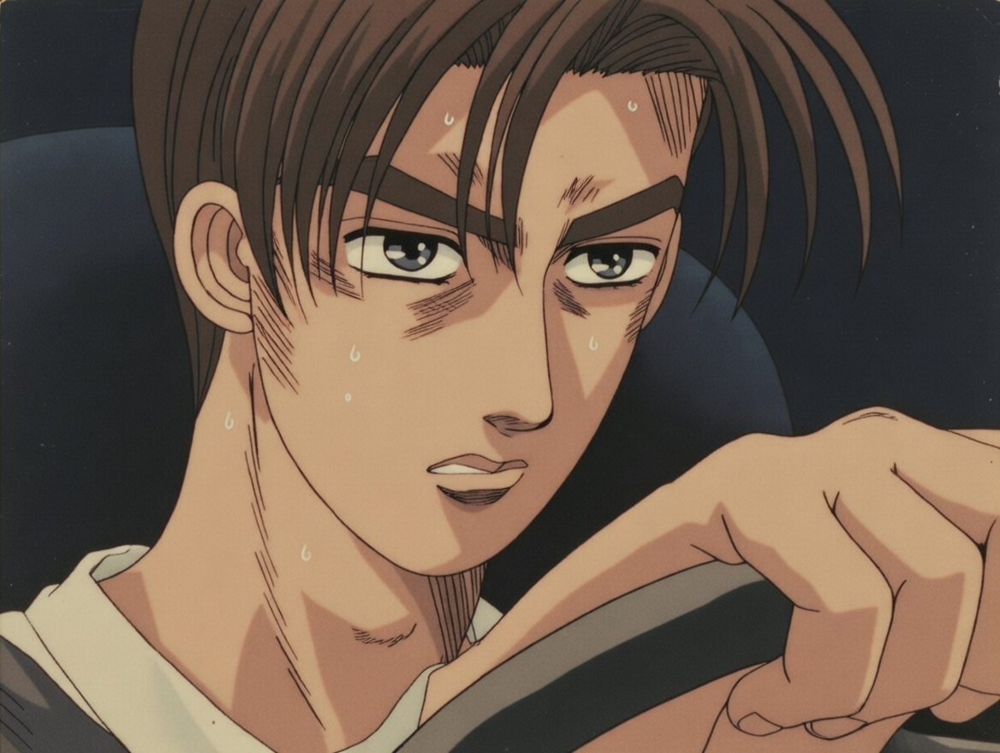
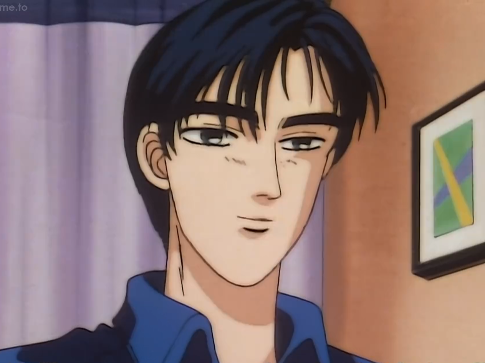

LEGENDARY DRIVERS
Profil pembalap jalanan yang telah mengukir nama mereka di aspal Akina dan prefektur sekitarnya.

TAKUMI FUJIWARA Team: Akina Speed Stars
Sang jenius turunan Gunung Akina yang mempelajari teknik drift luar biasa melalui pengiriman tahu setiap subuh. Ketenangannya di balik kemudi tak tertandingi.
BUNTA FUJIWARA (Original Akina Downhill Legend)
Legenda asli Gunung Akina dan pemilik toko tahu. Guru Takumi yang tak terkalahkan, dikenal dengan teknik balap "mata tertutup" yang sempurna.

RYOSUKE TAKAHASHI Team: Akagi RedSuns
Strategis balap jenius yang dikenal sebagai "White Comet of Akagi". Dia menganalisis setiap detail teknis untuk menciptakan teori balap yang tak terkalahkan.
KEISUKE TAKAHASHI Team: Akagi RedSuns / Project D
Pembalap nomor satu RedSuns (lintasan menanjak) yang memiliki ambisi tinggi. Dia mempelajari teknik drift dengan agresif dan penuh semangat.